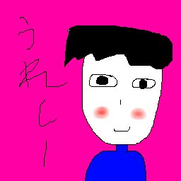

お風呂に貼る英語のやつ
解答付き

↓クリックで閉じる/開く
あけましておめでとう |
調子が悪い |
おたんじょうびおめでとう！！
|
忙しい
|
開かない
|
☆向かってます
|
ダー
|
喜びの舞
|
どこ？
|
おわった～
|
ゆるして
|
ひま
|
がんばれ
|
いいね！
|
ばいばい
|
助けて
|
変顔
|
☆怖っ |
虫だー！
|
いってらっしゃい
|
いやだ
|
☆かわいくてごめん
|
くっさ |
☆はっくしょん
|
まだ？ |
まかせます
|
ちょっとまって
|
めんど
|
☆奇跡 |
もぐもぐ
|
☆月が綺麗ですね
|
だめ
|
いってきます |
おはよー
|
おーい
|
おいっ！
|
OK！
|
おかえり
|
おねがい
|
おつかれ
|
おやすみー
|
問題
|
☆はやく |
雨です
|
☆論破
|
ごめん |
集中しています
|
ただいまー
|
・・・ |
ありがとう！！
|
おわった
|
うまい
|
うれしー |
ざんねん |
きっも！
|
事件！ |
☆キターーーーーー！ |
☆YES！
|
NO！
|
ブサイク
|
かっこよ
|
きもちい～
|
☆古っ |
☆勝った！ |
負け...
|
☆運動中
|
八方美人 |
☆huh?
|
諸行無常
|
魑魅魍魎
|
うらめしや～
|
うらやま
|
☆かわよ
|
つまんな
|
☆うっそぴょーん
|
☆きゃー |
カモー
|
☆さみしい...
|
絶体絶命 |
☆思考中...
|
クビ
|
☆ひらめいた |
☆天才！！
|
☆鉄拳制裁 |
☆どんちゃん騒ぎ
|
スクリーンショット→Googleフォトで白塗→絵を描く の関係上、ファイルの拡張子は.pngです。